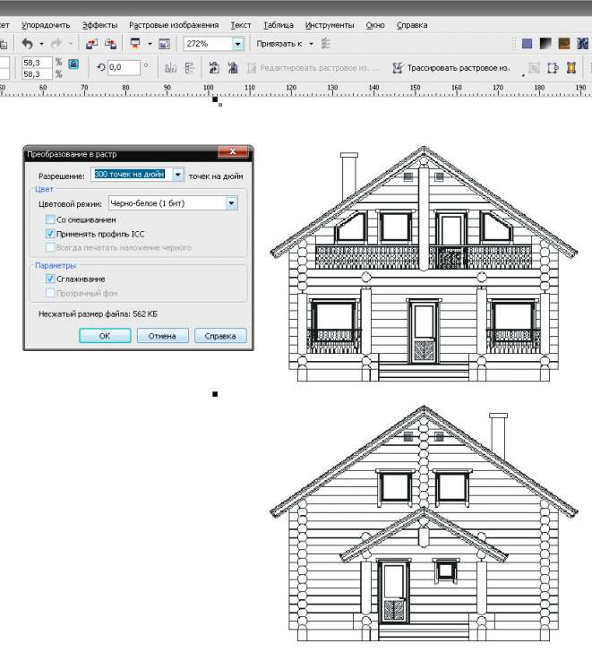
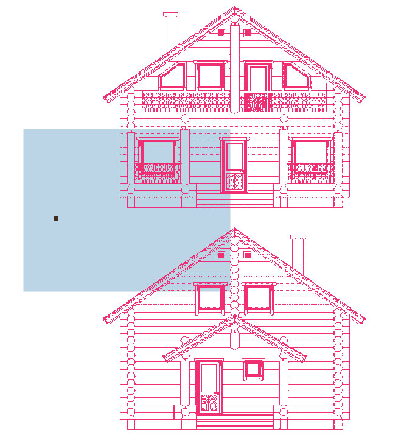

из JPG в контур
dohtur / 27.03.2011, 13:34/00:41
Форум:
Доброго всем дня!
Просмотрел форум и не смог найти следующую инфу - видел как для облегчения создания чертежей различных деталей или допустим проектов домов - берут готовую JPGшную картинку, какимто образом её обрабатывают, что она становится красного цвета и полупрозрачная, после этого помещают её на лист и начинают просто накладывать линии на полученный контур.
Мне отказались показать как это делать, а очень хочется.
Просто сейчас нужно отрисовать себе проект дома - есть JPG файл интересуемого плана дома - подскажите как его перевести в контур для обрисовки?
Заранее спасибо!!!
Да ничего не надо обрабатывать. Для отрисовки достаточно:
1. Положить картинку на отдельный слой, ниже того на котором будет вектор (линии).
2. По желанию, задать картинке прозрачность что бы сделать её блёклой.
3. Заблокировать слой с картинкой, перейти на слой для вектора и отрисовывать.
ищи в в меню "растровое изображение - контур - найти края"
ой пасиб пасиб!!! ща буду пробувати :)
dohtur, чертёж, я так понимаю — чёрный, а тебе для отрисовки нужен красный и прозрачный? Если так, то тогда:
Расстровые изображения — Преобразование в растр — Чёрно-белое (1 бит)

Теперь левой кнопкой мыши на палитре цветов нажимаешь крестик (убираешь заливку), а правой кнопкой на палитре выбираешь цвет

огромное всем спасибо! так всё просто :)